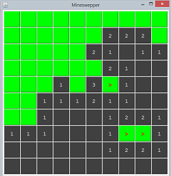

Rules of Game
You could wiki "Mine Sweeper" to understand the rules of the game.
Mine Sweeper is a single-player mind game. The objective is to clear a rectangular mine field containing hidden "mines" without detonating any of them, with help from clues about the number of neighboring mines in the revealed cells. You left-click to reveal a cell; and right-click on a cell to plant/remove a flag marking suspicious mine. You win if all the cells not containing mines are revealed; you lose if you reveal a cell containing a mine.
Graphical Display
 Start with the GUI for display. The GUI codes is simple. For the basic version with 10x10 cells, construct a 10x10 JButton array and arranged in 10x10 GridLayout.
The steps for producing the display are:
- Set the
JFrame's content-pane to 10×10GridLayout. Create 10×10JButton(calledbtnCells) and add to the content-pane. The un-revealed cells shall have no label, in green, and enabled. The revealed cell shall display the number of mines in its 8-neighbors, in grey, and disabled. - The location of the mines are stored in a 10x10
booleanarray calledmines. Similarly, the location of flags are stored in a 10x10booleanarray calledflags.
Study the following codes. Fill in the main() method ([TODO 1]), leave the event handling codes ([TODO 2], [TODO 3] and [TODO 4]) later, and run the program, which shall produce the display.
import java.awt.*; // Use AWT's Layout Manager import java.awt.event.*; // Use AWT's Event handlers import javax.swing.*; // Use Swing's Containers and Components /** * The Mine Sweeper Game. * Left-click to reveal a cell. * Right-click to plant/remove a flag for marking a suspected mine. * You win if all the cells not containing mines are revealed. * You lose if you reveal a cell containing a mine. */ @SuppressWarnings("serial") public class MineSweeper extends JFrame { // Name-constants for the game properties public static final int ROWS = 10; // number of cells public static final int COLS = 10; // Name-constants for UI control (sizes, colors and fonts) public static final int CELL_SIZE = 60; // Cell width and height, in pixels public static final int CANVAS_WIDTH = CELL_SIZE * COLS; // Game board width/height public static final int CANVAS_HEIGHT = CELL_SIZE * ROWS; public static final Color BGCOLOR_NOT_REVEALED = Color.GREEN; public static final Color FGCOLOR_NOT_REVEALED = Color.RED; // flag public static final Color BGCOLOR_REVEALED = Color.DARK_GRAY; public static final Color FGCOLOR_REVEALED = Color.LIGHT_GRAY; // number of mines public static final Font FONT_NUMBERS = new Font("Monospaced", Font.BOLD, 20); // Buttons for user interaction JButton btnCells[][] = new JButton[ROWS][COLS]; // Number of mines in this game. Can vary to control the difficulty level. int numMines; // Location of mines. True if mine is present on this cell. boolean mines[][] = new boolean[ROWS][COLS]; // User can right-click to plant/remove a flag to mark a suspicious cell boolean flags[][] = new boolean[ROWS][COLS]; // Constructor to set up all the UI and game components public MineSweeper() { Container cp = this.getContentPane(); // JFrame's content-pane cp.setLayout(new GridLayout(ROWS, COLS, 2, 2)); // in 10x10 GridLayout // Allocate a common instance of listener as the MouseEvent listener // for all the JButtons // ... [TODO 3] (later) .... // Construct 10x10 JButtons and add to the content-pane for (int row = 0; row < ROWS; row++) { for (int col = 0; col < COLS; col++) { btnCells[row][col] = new JButton(); // Allocate each JButton of the array cp.add(btnCells[row][col]); // add to content-pane in GridLayout // Add MouseEvent listener to process the left/right mouse-click // ... [TODO 4] (later) ... } } // Set the size of the content-pane and pack all the components // under this container. cp.setPreferredSize(new Dimension(CANVAS_WIDTH, CANVAS_HEIGHT)); pack(); setDefaultCloseOperation(JFrame.EXIT_ON_CLOSE); // handle window-close button setTitle("Mineswepper"); setVisible(true); // show it // Initialize for a new game initGame(); } // Initialize and re-initialize a new game private void initGame() { // Reset cells, mines, and flags for (int row = 0; row < ROWS; row++) { for (int col = 0; col < COLS; col++) { // Set all cells to un-revealed btnCells[row][col].setEnabled(true); // enable button btnCells[row][col].setForeground(FGCOLOR_NOT_REVEALED); btnCells[row][col].setBackground(BGCOLOR_NOT_REVEALED); btnCells[row][col].setFont(FONT_NUMBERS); btnCells[row][col].setText(""); // display blank mines[row][col] = false; // clear all the mines flags[row][col] = false; // clear all the flags } } // Set the number of mines and the mines' location // Hardcoded here! Should be randomly generated for each game. numMines = 10; mines[1][3] = true; mines[5][2] = true; mines[9][5] = true; mines[6][7] = true; mines[8][2] = true; mines[2][4] = true; mines[5][7] = true; mines[7][7] = true; mines[6][8] = true; mines[4][8] = true; } // The entry main() method public static void main(String[] args) { // [TODO 1] (Now) ...... } // Define the Listener Inner Class // ... [TODO 2] (Later) ... }
Event Handling
Next, we shall program the event handling.
We shall use a common instance of a Named Inner Class (called CellMouseListener) as the MouseEvent listener for all the JButtons. We use MouseEvent instead of ActionEvent because we need to differentiate between right-click (to reveal a cell) and left-click (to plant/remove a flag). In the mouseClicked(), we need to identify the particular JButton (in terms of row and col) that trigger the event. You could use the Event.getSource() method to retrieve the source object that has fired the event and compare the object with all the 10×10 JButtons, as follows:
// [TODO 2] // Inner class used for all cells' MouseEvent listener private class CellMouseListener extends MouseAdapter { @Override public void mouseClicked(MouseEvent e) { // Determine the (row, col) of the JButton that triggered the event int rowSelected = -1; int colSelected = -1; // Get the source object that fired the Event JButton source = (JButton)e.getSource(); // Scan all rows and columns, and match with the source object boolean found = false; for (int row = 0; row < ROWS && !found; ++row) { for (int col = 0; col < COLS && !found; ++col) { if (source == btnCells[row][col]) { rowSelected = row; colSelected = col; found = true; // break both inner/outer loops } } } // Left-click to reveal a cell; Right-click to plant/remove the flag. if (e.getButton() == MouseEvent.BUTTON1) { // Left-button clicked // [TODO 5] If you hit a mine, game over // Otherwise, reveal the cell and display the number of surrounding mines ...... } else if (e.getButton() == MouseEvent.BUTTON3) { // right-button clicked // [TODO 6] If the location is flagged, remove the flag // Otherwise, plant a flag. ...... } // [TODO 7] Check if the player has won, after revealing this cell } }
In MineSweeper.java's constructor:
- Declare and allocate a common instance called
listenerof theCellMouseListenerclass:// ... [TODO 3] ... CellMouseListener listener = new CellMouseListener(); - All
JButtons shall add this common instance as itsMouseEventlistener:// ... [TODO 4] ... btnCells[row][col].addMouseListener(listener); // For all rows and cols
Continue the mouseClicked() to process the input in that particular (rowSelected, colSelected) ([TODO 4], [TODO 5], and [TODO 6]).
Some useful methods of JButton are as follows. You can check the Java API for more methods.
setBackground(Color c) // Set the background color of the Component setForeground(Color c) // Set the text (foreground) color of the Component setEnabled(true|false) // Enable/Disable the JButton setFont(Font f) // Set the font used by the Component
Hints and Miscellaneous
- This is a moderately complex program. You need to use the graphics debugger under Eclipse/NetBeans to debug your program logic.
- Check the JDK API on the classes and methods available under Swing.
- You can use the following
staticmethod to pop up a dialog box with a message:JOptionPane.showMessageDialog(null, "Game Over!");
- You can remove the
MouseEventlistener once the cell is revealed (i.e., no further processing for mouse-click) inmouseClicked()via:btnCells[rowSelected][colSelected].removeMouseListener(this);
- We process
MouseEvent, instead ofActionEvent, for theJButton. Hence, there is no need to useJButton- a simpleJLabelworks as well forMouseEvent.
More Credits
- If a cell with no surrounding mine is revealed, all the 8-neighbors shall be automatically revealed, in a "recursive" manner. Also, there is no need to display the number "0".
- Beautify your graphical interface, e.g., color, font, layout, etc.
- Choice of difficulty levels.
- Create a status bar (
JTextFieldat the south zone ofBorderLayout) to show the messages (e.g., the number of mines remaining). (Google "java swing statusbar"). - Create a menu bar for options such as "File" ("New Game", "Reset Game", "Exit"), "Options", and "Help" (Use
JMenuBar,JMenu, andJMenuItemclasses). - Timer (pause/resume), score, progress bar.
- A side panel for command, display, strategy?
- Choice of game board - there are many variations of game board!
- Sound effect, background music, enable/disable sound?
- High score and player name?
- Hints and cheats?
- Choice of display "theme"?
- Use of images and icons?
- ......
(Advanced) Subclassing JButton
The javax.swing.JButton does not contain identifiers (such as row and column). You can actually create your subclass of JButton to provide the additional functionality, which will greatly simplify your programming. E.g,.
import javax.swing.JButton;
public class Cell extends JButton { // or JLabel
// Package access
int row, col; // row and col of this JTextField
boolean hasMine; // contains a mine?
boolean hasFlag; // marked with flag?
boolean isRevealed;
......
}
REFERENCES & RESOURCES